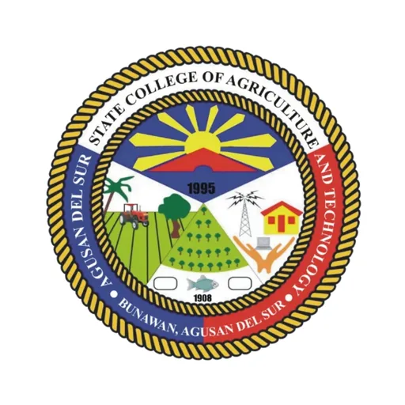

ASSCAT Agri-Food Processing and Innovation Center
Agusan del Sur State University (formerly ASSCAT) · Region XIII
The ASSCAT Agri-Food Processing and Innovation Center at Agusan del Sur State University (formerly the Agusan del Sur State College of Agriculture and Technology) in Bunawan, Agusan del Sur is one of DOST Caraga's regional food innovation facilities, providing food processing, product development and technical services to agri-food MSMEs in the region.
- Category
- Food Innovation Center
- Host institution
- Agusan del Sur State University (formerly ASSCAT)
- City
- Bunawan, Agusan del Sur
- Region
- Region XIII
- Operating status
- Operating
About the Center
The Caraga FIC at Agusan del Sur State College of Agriculture and Technology (ASSCAT) in Bunawan, Agusan del Sur is a DOST Food Innovation Center (FIC) satellite facility operating within the Caraga Food Innovation Consortium (CFIC). As an agriculture-focused institution deep in the upland interior of Caraga, ASSCAT is positioned to serve the agri-food processing needs of Agusan del Sur's farming communities — supporting smallholder producers, agricultural cooperatives, and agri-based MSMEs with food technology services and product development assistance.
The ASSCAT FIC brings DOST's food innovation capabilities closer to Agusan del Sur's rural producers, providing access to the standard DOST FIC equipment suite and technical advisory services that would otherwise require travel to the main Caraga FIC in Butuan City. The center supports the full value chain from raw agricultural produce to market-ready food products — helping Agusan del Sur's farmers and cooperatives add value to local commodities through improved processing, packaging, and regulatory compliance.
Programs & Services
- Food Product Development — Technical assistance to Agusan del Sur's farmers and MSMEs in developing new food products from local agricultural commodities, including recipe formulation, process standardization, and shelf-life optimization
- Food Processing Technology Services — Access to DOST-standard food processing equipment for spray drying, freeze drying, water retort processing, and vacuum frying, extending DOST FIC capabilities to Agusan del Sur's producers
- Food Safety & Quality Assistance — Technical support for FDA product registration, food safety compliance, Good Manufacturing Practices (GMP) implementation, and quality assurance for MSME and cooperative food enterprises
- Packaging & Labelling Support — Assistance with consumer-ready packaging design and FDA-compliant labelling for Agusan del Sur's agri-food products destined for local, regional, and national markets
- Product Costing & Market Access — Guidance on production costing, pricing strategies, and market linkage to help ASSCAT FIC clients build commercially viable food enterprises from their local agricultural outputs
- Training & Capacity Building — Workshops and hands-on training for ASSCAT students, faculty, and Agusan del Sur community members on food processing technology, food entrepreneurship, and DOST-supported MSME development programs
Contact
Sources & references
- caraga.dost.gov.ph/agusan-del-sur-training-for-fic-upgrade
- pia.gov.ph/news/dost-establishes-food-innovation-centers-to-bolster-caraga-…
- agusandelsur.gov.ph/2026/03/17/asscat-elevated-now-agusan-del-sur-state-uni…
Details are drawn from public records and the sources above, July 2026.
Startupreneur Innovation Hub · synced from the Notion catalog (July 2026) · status: published.